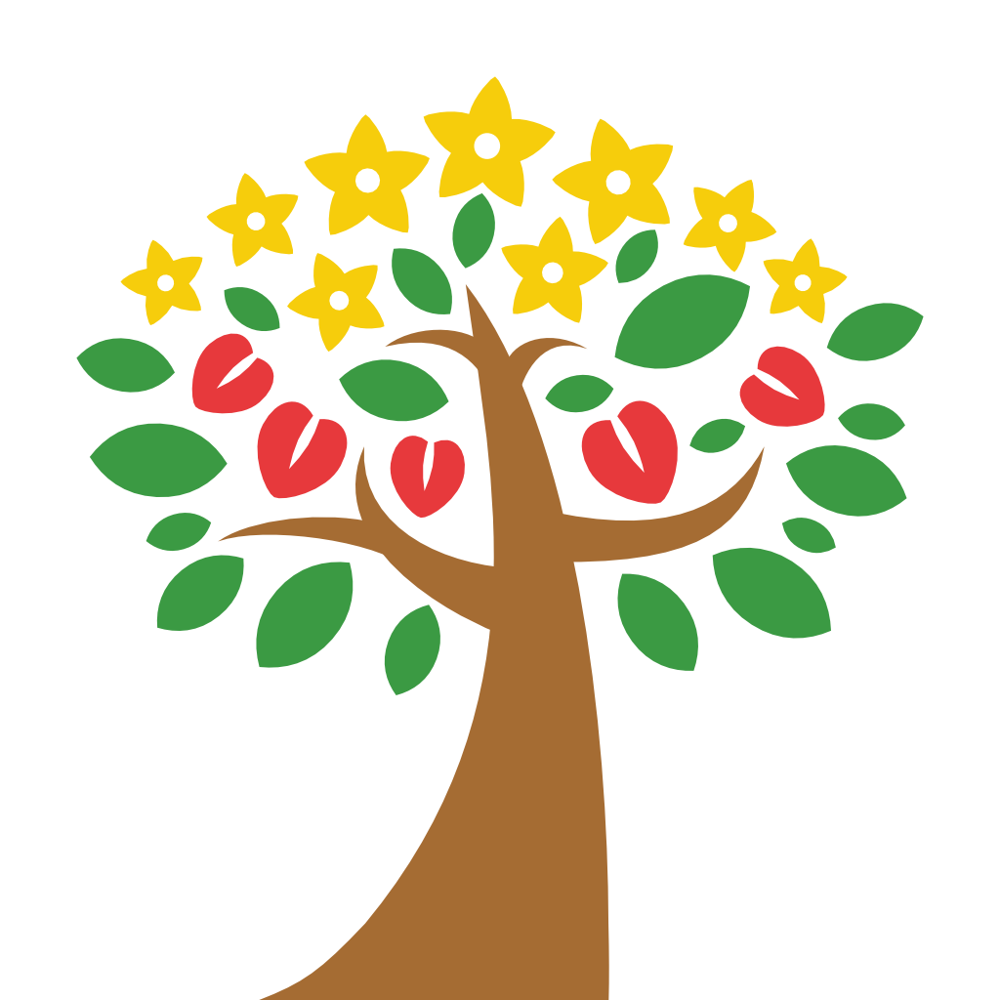

應用程式 Apps
memoland 地圖筆記本
隨身的地圖筆記本。長按地圖即建立點位，筆記、錄音與照片全都記在你的主題地圖裡。內建 13 個由政府開放資料轉製的臺灣生態環境圖層，支援 WGS84 與 TWD97 座標跳轉，可離線使用，整個主題也能打包成 ZIP 分享。
A map notebook you carry everywhere. Long-press the map to drop a pin and keep notes, voice memos and photos where they happened. 13 built-in Taiwan environmental layers, WGS84 and TWD97 coordinate jump, works offline, exports as ZIP.
22.9906, 120.202222°59′26.2″N 120°12′07.9″ETWD97 168208, 2543465
聯絡 Contact
應用程式相關問題、錯誤回報或任何建議，歡迎來信。